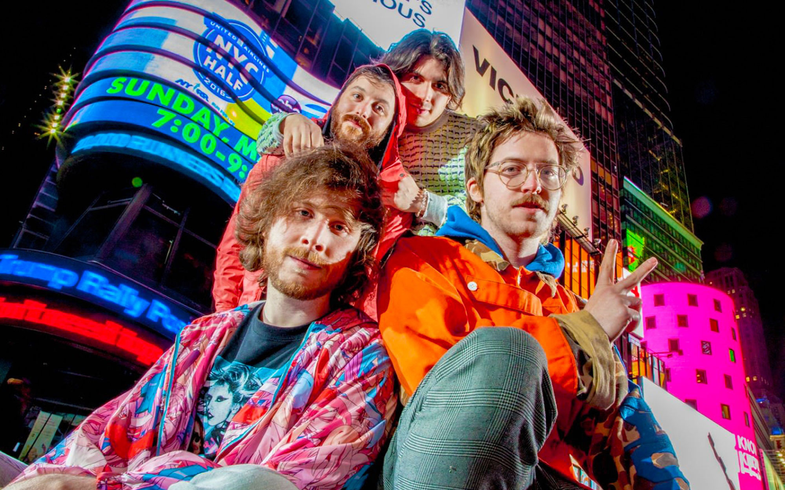
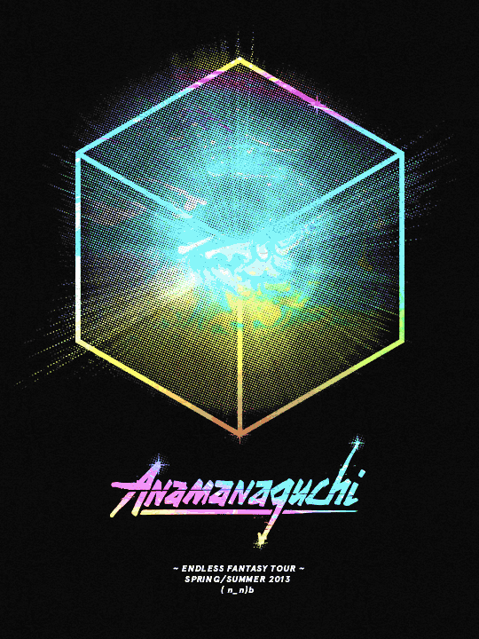
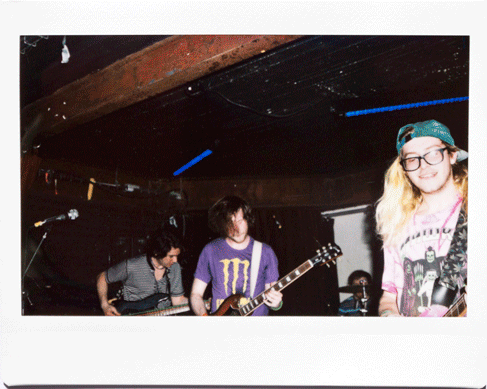

 Established in 2004, this electronic band from New York has been wowing fans of both chiptune and rock music by fusing the two together in an awesome celebration of nerd culture. They take elements from classic video games, j-pop, and rock anthems and combine them all into what is a perfect mesh of electronic tones and hard rock instrumentals. Their first big hit was “meow” which was a collaboration between Daniel Gray Longino and Eric Notarnicola from Absolutely productions, the same production company that makes Tim and Eric and has also been mentioned many times to be one of Peter Berkman’s top influences, as well as Japanese music and video games.
 They've had a few main albums that have all been showered with fan praise. my personal favorite, as well as my introduction to the band was endless phantasy, of which you'll find the video below. This album came out at a time when I was just digging into chiptunes and has just blown me away with the perfect mix of analogue and computer based music, and with pop-style vocals that compliment them perfectly. They also represent a group that doesn't take things too seriously, they're not afraid to poke fun at themselves or different trends in their music, while at the same time being super true to who they are, Ary in particular can be seen roaming conventions in his pink sailor moon wind breaker, giving fans photos, autographs, and just generally enjoying the event like any other person there. Moves like that make me respect someone so much, when they're not afraid to do what they think is cool, and to hell with whoever says otherwise.
 They're other albums were fairly interesting with the first album,power supply being mostly chiptune with less of the guitar and drums being played and their latest album, which was more toward the pop vocals and had almost no chiptune backing at all. it's like they're on some strange evolution slowly leaving their 8-bit roots behind, but the fans aren't complaining because the music retains that sound we all fell in love with upon listening to our first track from the fledgling group.
At one point they were even approached to do a song with Hatsune Miku, the first virtual pop star from japan, they crafted a track on which she did the vocals and opened for her on her North american tour stops